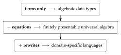

Chapter 7
Graph-Structured Lambda Theories
7.1 The lineage: structured operational semantics
The presentation style we depend on is Plotkin’s [126, 46]. Before structured operational semantics, giving the meaning of a programming construct meant either a denotational assignment into a domain or an informal appeal to an abstract machine. Plotkin’s proposal was that one could give the behaviour of a language syntactically, by inference rules over the term structure, with the rules for a compound term given in terms of the rules for its parts. The presentation was finite, it was checkable, and — this is the part that matters here — it was structural: the shape of the rules followed the shape of the grammar.
Milner’s Functions as Processes [125] adopts this style and sets the standard by which such presentations should be judged. The paper gives the \(\pi\)-calculus by a grammar, a structural congruence, and a small family of reduction rules, and then encodes the \(\lambda\)-calculus into it. What makes the presentation exemplary is not merely that it is correct but that it is complete in the relevant sense: the grammar, the congruence, and the rules together are the whole of the definition. Nothing is left to the reader’s operational imagination. One can mechanically check a claimed reduction, and one can mechanically check that an encoding respects reduction, because there is nothing to the language beyond what has been written down.
Cardelli and Gordon’s presentation of the mobile ambient calculus [117] adopts precisely this style, and it is instructive to see how little has to change. The ambient calculus is a very different theory — its reductions restructure a spatial hierarchy rather than substitute a value — and yet the presentation is recognisably the same document: sorts, term formers, a structural congruence, a handful of reduction rules, and congruence rules closing reduction under the term formers. The style is not an artifact of process calculi. It is a general format for presenting a language.
The observation on which this document rests is that once a presentation is that regular, it is data. A grammar is a signature. A structural congruence is a set of equations. Reduction rules and congruence rules are a set of rewrites. These are not analogies; they are the same information under different typography. A GSLT is what you get when you stop treating an SOS presentation as a document to be read by a human implementer and start treating it as a structure to be consumed by a machine.
7.2 The definition
A graph-structured lambda theory is a triple \(G = (\Sigma, E, R)\) consisting of
a signature \(\Sigma\), which is in general a lambda theory — so that terms may contain variables;
a set \(E\) of equations, imposing a structural congruence \(\equiv\); and
a set \(R\) of rewrite rules.
This part writes a theory as \(G = (\Sigma, E, R)\) and reserves boldface for the categories — \(\catGSLT\), \(\catiGSLT\), \(\catciGSLT\) — because that is the notation in which the constructions were first worked out and in which the reader will find them in the reference literature. Later parts of the book write the same data as \(\GSLT = (\terms, \eqs, \rules)\), a theory being denoted by a single calligraphic letter because the parts that use it care about which theory they are in far more often than they care about which component of it they are looking at. Nothing turns on the difference. Where a later chapter says “the GSLT \(\GSLT\)” it means an object of \(\catGSLT\), and where this part says “the signature \(\Sigma\)” a later chapter would say “the grammar \(\terms\)”.
The definition is deliberately thin in one direction and deliberately generous in another, and both deserve comment.
It is thin in that a GSLT is any rewrite theory whatever. Nothing in Definition 7.1 says the theory is about computation, or that it has processes, or that anything interacts with anything. The strengthenings of Chapters 8 and 9 add exactly the structure later constructions require, and the discipline of the present document is to add it only when a construction needs it.1
It is generous in that \(\Sigma\) is a lambda theory rather than a bare algebraic signature. That is the substantive choice in the definition, and the next subsection is about why it was made.
7.3 Reading the name
The two halves of “graph-structured lambda theory” are doing two separable jobs. The lambda theory captures the term language — specifically, a term language with variables. The adjective graph-structured captures the rewrite rules. It is worth taking these in turn, and worth recording the route not taken, because the route not taken is the one a reader familiar with categorical algebra will expect.
7.4 Why lambda theories and not Lawvere theories
The natural first thought is that a language presentation is an algebraic theory, and that the right categorical home for an algebraic theory is a Lawvere theory [123]: a category with finite products whose objects are the powers of a generic object, in which an \(n\)-ary operation is a morphism \(n \to 1\). This is a beautiful and well-understood setting, and it is not adequate here.
The reason is variables. A Lawvere theory does not generate a term language with variables; it generates a term language in which variables have been absorbed into arities. A term in \(n\) variables is not a term containing variables, it is a morphism out of \(n\). That encoding is faithful for first-order algebra and it breaks down exactly where we need it not to: one cannot abstract, one cannot have a variable that ranges over functions, and one cannot write a binder. Every calculus this document treats has binders — \(\lambda x.M\), \(\mathrm{for}(x \leftarrow n)P\), \(\mathrm{new}(x, P)\) — and a formalism that cannot express a binder cannot present them.
Lambda theories do generate term languages with variables. And in the limit — that is, in how the variables get used, which is to say abstraction and application — lambda theories are cartesian closed categories. This is the content of the Curry–Howard–Lambek correspondence [122], and it is why the classifying form of Section 7.6 carries a chosen cartesian closed structure. The CCC structure is not an extra assumption bolted on for the convenience of Chapter 19; it is what a lambda theory becomes when one asks what its variables are for.
7.5 Why adjoined and not enriched
The second natural thought concerns the rewrites. Rewriting looks like \(2\)-dimensional structure — between two terms there is not merely the question of whether they are equal but a collection of ways of getting from one to the other — and the standard technique for such structure is enrichment: take hom-objects in the category of graphs rather than in \(\mathbf{Set}\). Graph-enriched Lawvere theories were the initial approach, and they too are not adequate here.
The difficulty is that enrichment puts the rewrite structure in the wrong place. Under enrichment the graph of rewrites lives in the hom, where it is available to whatever respects composition and to nothing else. But we want to quantify over rewrites: the history monad of Chapter 12 makes rewrite events into terms, and the type-generation of Chapter 19 reads a rewrite rule together with a choice of position inside its left-hand side. Neither operation is available to a construction that can only see hom-objects.
The approach we take instead is to adjoin the graph structure to the theory, as a Lawvere theory of graphs. One says what the sources and the targets are, and ensures that the source and target maps enjoy the minimal requisite equations. The rewrite structure thereby becomes ordinary algebraic structure inside the theory, presented by the same mechanism that presents everything else — rather than a change of base for enrichment, sitting outside the theory and constraining it from without. The framing of operational semantics in this algebraic style follows Stay and Meredith [41] and Baez and Williams [115].
Lambda theory captures term languages with variables. Graph-structured captures the rewrite rules. A GSLT is a term language with variables, together with an adjoined graph of rewrites over it.
The choice is visible in the specification format. Because the graph structure is
adjoined rather than enriched, the rewrites block of a specification is not a
different kind of declaration from the terms block — it is more
algebraic structure over the same signature. That is why the ladder of
Section 7.7 is a ladder rather than three unrelated facilities, and why a
tool that can read the first two blocks can read the third.
7.6 Presentation and classifying theory
Definition 7.1 is syntactic: it is what a developer writes and what a machine accepts. Several constructions below are more naturally stated semantically, and Section 7.3 has already said what the semantic form is. We record it explicitly.
The classifying theory of a presentation is a category \(\mathsf{T}\) with finite limits and a chosen cartesian closed structure — the cartesian closure being what the lambda theory \(\Sigma\) becomes in the limit — equipped with its subobject fibration \(\pi : \mathrm{Sub}(\mathsf{T}) \to \mathsf{T}\), a distinguished object \(\Pr\) of programs, and a distinguished subobject \[(\rsq) \rightarrowtail \Pr \times \Pr\] of one-step reduction, together with entailments generating the base rewrites and their closure under the term formers. This is the presentation-independent form in which the type-theoretic construction of Chapter 19 takes its input.
The subobject \((\rsq)\) is the adjoined graph of Section 7.3 seen semantically: its source and target maps are the two projections, and the entailments generating the base rewrites and closing them under the term formers are the minimal equations those maps must satisfy. So the two presentations are not two objects to be reconciled; they are the syntactic and semantic faces of the same construction, and the reason the classifying theory has exactly the structure it has is that \(\Sigma\) is a lambda theory and \(R\) is adjoined as a graph.
We take the presentation as primary throughout, for the practical reason that it is what one can type, and use the classifying theory when a construction is more naturally stated in the internal language.
7.7 The ladder
Definition 7.1 has three components, and the reader can switch two of them off. Doing so produces a ladder of three rungs, each of which is a familiar and independently useful thing. We climb it because it is the most efficient route we know from “I already know what this is” to “I did not know you could do that.”

7.8 Rung one: terms only
Take \(E = \emptyset\) and \(R = \emptyset\). What remains is a multi-sorted signature: a set of sorts and a set of operators with declared argument sorts and result sort. The terms over such a signature, up to nothing at all, are exactly the inhabitants of an algebraic data type.
language! {
name: Json,
types {
Value
Field
},
terms {
JNull . Value ::= "null" ;
JBool . b:Bool |- b : Value ;
JNum . n:BigRat |- n : Value ;
JStr . s:Str |- s : Value ;
JArr . Value ::= "[" List(Value) "]" ;
JObj . Value ::= "{" List(Field) "}" ;
Field . k:Str, v:Value |- k ":" v : Field ;
},
equations { },
rewrites { },
}There is nothing here a working developer has not written a hundred times, in whatever notation their language provides for sums of products. The point of the rung is not that it is novel but that it is included: the specification format that will shortly describe the \(\pi\)-calculus describes a JSON document with no change of register.
7.9 Rung two: equations
Now populate \(E\). The terms are quotiented by a congruence, and what one is presenting is no longer a free term algebra but an algebra satisfying equations — that is, a finitely presentable object of universal algebra. Monoids, groups, rings, lattices, semilattices, and the various bag- and set-like structures all live at this rung.
language! {
name: Monoid,
types { M },
terms {
Unit . M ::= "e" ;
Mul . x:M, y:M |- x "*" y : M ;
},
equations {
Assoc . |- (Mul (Mul X Y) Z) = (Mul X (Mul Y Z)) ;
UnitL . |- (Mul Unit X) = X ;
UnitR . |- (Mul X Unit) = X ;
},
rewrites { },
}The rung matters to us for a specific downstream reason. The equational theory of a single operator — whether it is free, associative, or associative–commutative — turns out to determine whether proximity to a resource confers authority over it (Section 11.5), and whether an interaction surface can be carried by position or must be named explicitly (Section 8.3). Equations are not decoration. They are the difference between an object-capability discipline and an ambient-authority leak.
7.10 Rung three: rewrites
Finally populate \(R\). Now the data can wiggle.
This is the rung at which a specification stops describing a static structure and starts describing a language with a behaviour. The reduction rules of an SOS presentation go here, and so do the congruence rules that close reduction under the term formers, in exactly the shape Plotkin, Milner, and Cardelli–Gordon wrote them.
language! {
name: Lambda,
types { Term },
terms {
Lam . ^x.body:[Term -> Term] |- "lam " x "." body : Term;
App . fun:Term, arg:Term |- "(" fun "," arg ")" : Term;
},
equations { },
rewrites {
Beta . |- (App (Lam fun) arg) ~> (eval fun arg);
AppCongL . | M0 ~> M1 |- (App M0 N) ~> (App M1 N);
AppCongR . | N0 ~> N1 |- (App M N0) ~> (App M N1);
LamCong . | S ~> T |- (Lam ^x.S) ~> (Lam ^x.T);
},
}Read the rewrites block against a textbook presentation of the
\(\lambda\)-calculus and the correspondence is immediate: one base rule and three
congruence rules, with the binder handled by the \^{}x. notation and
substitution by eval. The horizontal bar of an inference rule has become
|-, and the premises sit to its left. This is not a translation of the
\(\lambda\)-calculus into some other formalism. It is the \(\lambda\)-calculus, written so
that a machine can read it.
A reader arriving at rung three from rung one has crossed from data to computation without changing tools. That is the whole design argument for the format, and it is worth stating plainly: the reason to present a language as \((\Sigma, E, R)\) is not elegance, it is that the same machinery that gives you a parser and a pretty-printer for your JSON documents gives you a reduction engine for your calculus, and everything in Part III on top of that.
7.11 A worked presentation: the rho calculus
We will need the rho calculus [1] as a running example, since it is both the host language of Part IV and one of the more instructive instances of the constructions of Part III. It is a reflective higher-order calculus: names are not generated by a restriction operator but are quoted processes, and the quoting and unquoting operators \(@\) and \(*\) mediate between the two sorts.
language! {
name: RhoCalc,
types { Proc Name },
terms {
PZero . |- "Nil" : Proc;
PDrop . n:Name |- "*" n : Proc;
POutput . n:Name, q:Proc |- n "!" "(" q ")" : Proc;
PInput . n:Name, ^x.p:[Name -> Proc] |- "for" "(" x "<-" n ")" p : Proc;
PPar . ps:HashBag(Proc) |- "{" ps.*sep("|") "}" : Proc;
NQuote . p:Proc |- "@" p : Name;
},
equations {
QuoteDrop . |- (NQuote (PDrop N)) = N ;
},
rewrites {
Comm . |- (PPar {(PInput n ^x.p), (POutput n q), ...rest})
~> (PPar {(subst ^x.p (NQuote q)), ...rest});
Drop . |- (PDrop (NQuote P)) ~> P;
ParCong . | S ~> T |- (PPar {S, ...rest}) ~> (PPar {T, ...rest});
},
}Three features of this presentation will be load-bearing later. The parallel composition
PPar takes a HashBag, so its equational theory is
associative–commutative — position among parallel components carries no information.
The Comm rule matches two components of that bag and leaves the remainder
...rest untouched, which is what makes it a rule about a site of
interaction rather than about whole terms. And the quote constructor NQuote
gives the theory a way to name its own programs, which will matter when we ask whether a
theory can internalise apparatus applied to it.